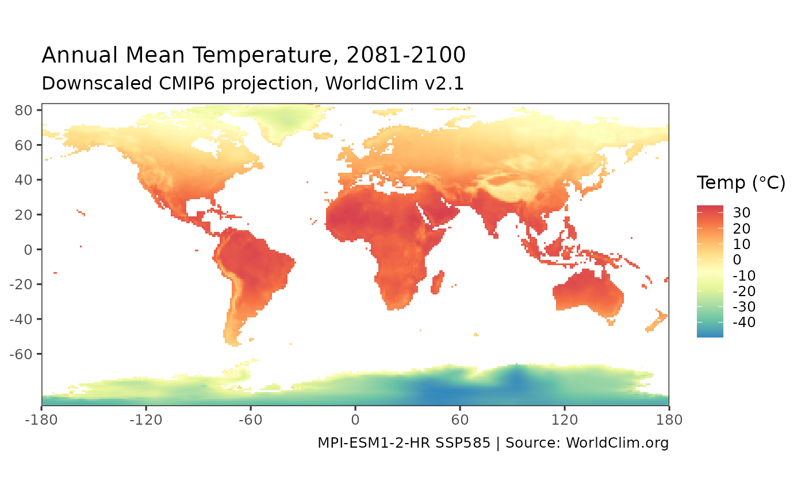

Retrieves downscaled CMIP6 climate projection data from WorldClim (https://www.worldclim.org/data/cmip6/). Data are monthly or bioclimatic variables projected by a selected global climate model (GCM) under an SSP scenario for one of four 20-year periods (2021-2100), at 10 arc-minute resolution.
Usage
get_cmip6(
var = "bioc",
bio = 1,
ssp = "585",
period = "2081-2100",
model = "MPI-ESM1-2-HR",
res = "10m",
use_cache = TRUE,
write_cache = getOption("hs_write_cache")
)Arguments
- var
(string) Climate variable. One of
"bioc"(bioclimatic variables, the default),"tmin","tmax", or"prec"(precipitation).- bio
(numeric) If
var = "bioc", which bioclimatic variable to return (1-19). Defaults to 1 (Annual Mean Temperature). The variables are: 1 = Annual Mean Temperature; 2 = Mean Diurnal Range; 3 = Isothermality (BIO2/BIO7); 4 = Temperature Seasonality (standard deviation); 5 = Max Temperature of Warmest Month; 6 = Min Temperature of Coldest Month; 7 = Temperature Annual Range (BIO5-BIO6); 8 = Mean Temperature of Wettest Quarter; 9 = Mean Temperature of Driest Quarter; 10 = Mean Temperature of Warmest Quarter; 11 = Mean Temperature of Coldest Quarter; 12 = Annual Precipitation; 13 = Precipitation of Wettest Month; 14 = Precipitation of Driest Month; 15 = Precipitation Seasonality (coefficient of variation); 16 = Precipitation of Wettest Quarter; 17 = Precipitation of Driest Quarter; 18 = Precipitation of Warmest Quarter; 19 = Precipitation of Coldest Quarter. Variables 1-11 are in degrees C (seasonality variables 4 and 7 as applicable), 12-19 in mm. For the monthly variables (var = "prec","tmin", or"tmax"),bioinstead selects the calendar month, 1-12 (1 = January).- ssp
(string) Shared Socioeconomic Pathway scenario. One of "126", "245", "370", or "585" (the default). SSP5-8.5 is the high-emissions upper bound and shows the strongest projected change; SSP2-4.5 is a middle-of-the-road scenario roughly consistent with current policies ("current trends continue"). SSP1-2.6 assumes strong mitigation, and SSP3-7.0 is a high fragmented-world path.
- period
(string) Projection period. One of "2021-2040", "2041-2060", "2061-2080", or "2081-2100" (the default).
- model
(string) CMIP6 global climate model. Defaults to "MPI-ESM1-2-HR". Availability of variable/scenario combinations varies by model; the function checks the WorldClim index and reports what is available.
- res
(string) Resolution: "10m" (~18 km, default), "5m" (~9 km) or "2.5m" (~5 km). Finer resolutions are considerably larger downloads.
- use_cache
(boolean) Return cached data if available, defaults to TRUE.
- write_cache
(boolean) Write data to cache, defaults to FALSE.
Value
Invisibly returns a tibble with columns lon, lat, and
value: the projected values aggregated to a one-degree grid.
Details
get_cmip6 downloads a WorldClim CMIP6 GeoTIFF, aggregates it to a
one-degree grid (averaging), and returns a tibble suitable for mapping.
Requires the terra package (installed automatically when needed).
References
WorldClim CMIP6 future climate data: https://www.worldclim.org/data/cmip6/
Fick, S.E. & Hijmans, R.J. (2017) WorldClim 2: new 1km spatial resolution climate surfaces for global land areas. Int. J. Climatol. 37: 4302-4315.
Author
Hernando Cortina, hch@alum.mit.edu
Examples
# \donttest{
# Projected annual mean temperature under SSP585, 2081-2100:
proj <- get_cmip6(var='bioc', bio=1)
plot_cmip6(proj)

#
# Projected precipitation change under a moderate scenario:
prec <- get_cmip6(var='prec', ssp=245, period='2041-2060', use_cache=FALSE)
# }